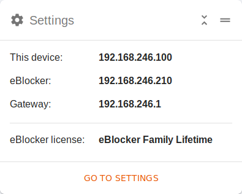
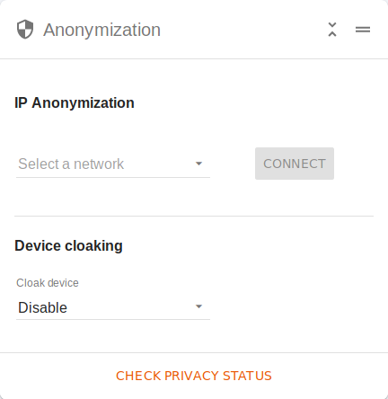
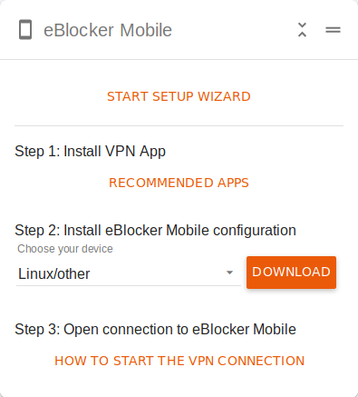
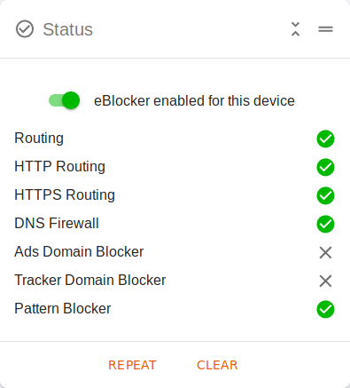

Deutsch | English
The eBlocker Dashboard is the control center for your device and your eBlocker. Here you can view all important information and make changes.
You can open the dashboard as follows:
Tip: Open the eBlocker Dashboard using the IP address of the eBlocker and bookmark the eBlocker Dashboard in your browser.
On the Dashboard so-called cards are displayed, which can be shown or hidden with the Dashboard Icon at the top right of the page.

Each dashboard card can be positioned individually on the Dashboard. To do this, click on the map in the upper right corner and move the card while holding down the left mouse button. To place the card in the new position, simply release the left mouse button.

Each dashboard card can be opened and closed to save space on your dashboard.
Click the arrows to close a dashboard card. Now you only see the title of the dashboard map. To open the dashboard card, click on the arrows again and the dashboard card will open.

Some maps for the dashboard are only displayed when the eBlocker HTTPS function is activated, because their function requires the activation of the eBlockers HTTPS function.
The eBlocker Dashboard offers you the following cards:
Pause

Here you can pause the eBlocker for this device for a few minutes. If the pause has been activated, the eBlocker is paused for 5 minutes. The pause can be extended or shortened by 5 minutes. After the time has elapsed, the pause is ended or you click on the "End pause" link.
Settings

Here you can see the IP addresses of your device, eBlocker and Gateway (your router). In addition, your eBlocker license is also displayed here. You will also be notified on this card when your license expires.
The link "Open settings" takes you to the eBlocker settings.
Messages

Here you will be informed about announcements and messages of the eBlocker. Click on the link "Show messages" to read the messages.
Messages can be important system events, for example, but also information about an update.
HTTPS support
(Only for eBlocker Pro and Family)

With the help of this card you can check if the eBlocker HTTPS certificate has been stored correctly. When the eBlocker HTTPS function is activated, the two points "HTTPS support" and "certificate available" should be confirmed, as shown in the picture above. The verification of the certificate by the eBlocker can take up to five seconds.
You can also use this card to deactivate or reactivate the HTTPS function for this device, or download the eBlocker certificate, if necessary, and then store it on this device.
Tracker & Ads
(Pattern Blocker - Only for eBlocker Pro and Family - Only available if HTTPS function is activated)

If the eBlocker HTTPS function is activated, you can create exceptions for web pages here. For example, you can allow for a domain tracker and advertising here, or only allow advertising for a domain.
Controlbar

Here you can activate or deactivate the eBlocker Control Bar icon on the web pages. You can also specify whether the eBlocker icon should only be displayed for 5 seconds, only in standard browsers, or to the left or right of the website.
Anonymization

Here you can enable anonymization for the device via the Tor network or a VPN connection. VPN connections must first be created in the eBlocker settings in the "IP Anonymization" > "VPN Network" tab.
Only when the HTTPS function of the eBlocker Pro and Family is activated can you see the device camouflage on this card. Here you can define whether web pages should recognize you as a completely different device. For example, you can surf with your PC, but the website recognizes you as an iPhone.
In addition, you can use the "Check privacy status" link to see some interesting information, but also to check whether your connection is really protected by the Tor network, or a VPN connection.
Tracker and Ad Filter Rules
(Domain Blocker - Only for eBlocker Pro and Family)

Here you can decide for this device whether the eBlocker should block trackers or data collecting advertisements. You can also specify whether eBlocker should be disabled or enabled for specific domains.
Please note that you do not deactivate all trackers or data collecting advertising for a certain domain, you only block or allow certain domains.
Example: If you allow the domain xyz.com here, then the connection to the domain xyz.com is allowed, but if the trackers or advertisements from another domain are reloaded from this domain, then eBlocker will prevent this.
Filter Statistics (device)
(Domain and Pattern Blocker - Only for eBlocker Pro and Family)

Here you can see a statistic of the eBlocker Blocker function for this device. The information of the last hour, the last day (24 hours) and the last week is displayed.
It does not matter whether you are using the pattern or domain blockers.
Blocked Statistics (total)
(Domain and Pattern Blocker - Only for eBlocker Pro and Family)

Here you can see the complete blocker statistics of the eBlocker since the last factory reset of the eBlocker. The information from all devices in your network is calculated together.
You can also view the top 25 tracker and advertising domains suppressed by the eBlocker.
It doesn't matter if you use the pattern or domain blockers.
eBlocker Mobile
(Only available if the eBlocker Mobile function is activated)

This card simplifies the setup of the eBlocker OpenVPN configuration. Here you can download the OpenVPN configuration for your device and store it in an OpenVPN app.
User
(Only for eBlocker Family - When a device is assigned to a user)

This card is displayed when an eBlocker has been assigned to a user. The user is displayed, you can take over a device, change the PIN, or lock this device.
In order to take over a device, a minimum of one additional user must be created.
Online Time
(Only for eBlocker Family - When a device is assigned to a user)

This card is displayed if the eBlocker has been assigned to a user and a time quota has been assigned to the user. On this card you can start and stop the online time. You can also see details of how much time is available, how much of the time quota has already been used and the allowed period.
Status


On this card you can deactivate the eBlocker for a device or perform a function test. The function test takes a few seconds and shows you a short evaluation of the tested functions.